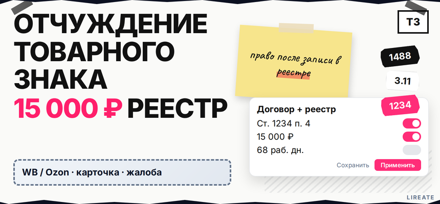
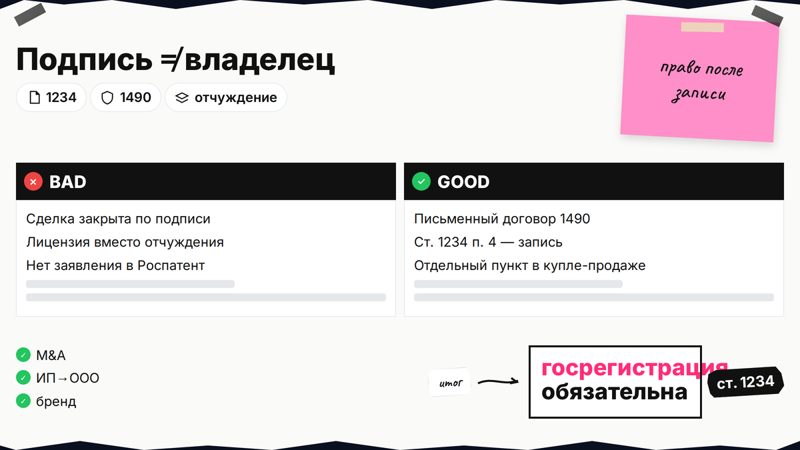
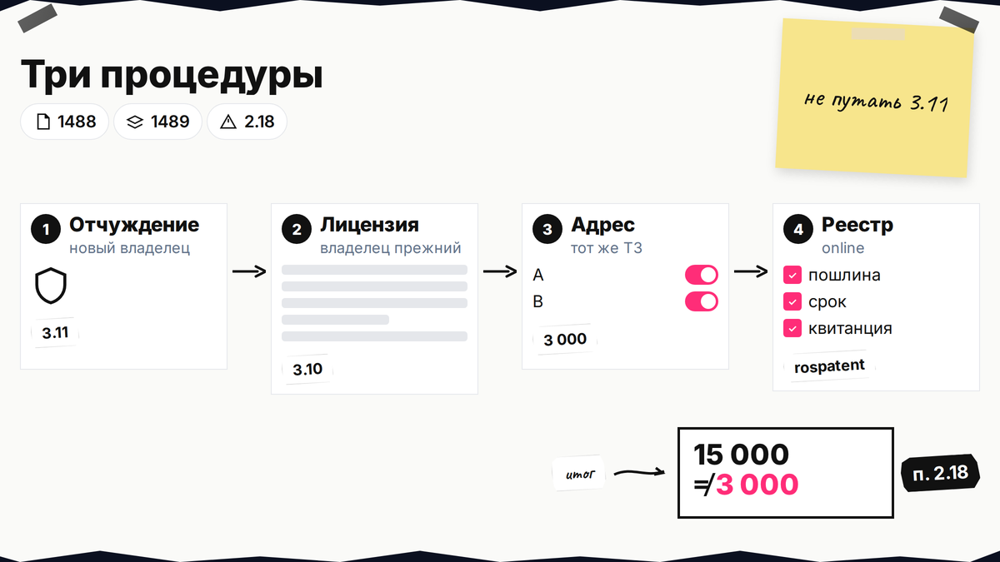
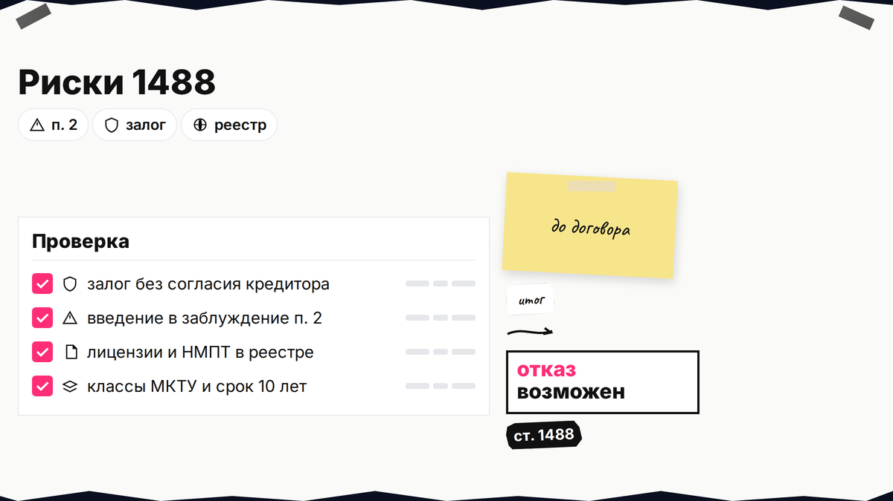

При продаже бизнеса или передаче бренда всплывает договор отчуждения товарного знака: достаточно ли подписи или нужна запись в реестре Роспатента, и когда покупатель станет правообладателем. По ст. 1234 п. 4 ГК РФ право переходит только после госрегистрации, не в день подписания. Ниже - проверка знака, сравнение с лицензией, пошлина 15 000 ₽ по п. 3.11, подача заявления и сроки до 45 рабочих дней на решение.

TL;DR / Быстрый инсайт: Отчуждение - передача исключительного права на зарегистрированный ТЗ (ст. 1488) в письменном договоре (ст. 1490). Без записи в реестре переход несостоялся (ст. 1232 п. 6). Пошлина п. 3.11: 15 000 ₽ + 13 000 ₽ за каждый доп. ТЗ; срок услуги - до 68 раб. дн. (административный регламент Роспатента, приказ № 371). Это не лицензия и не смена адреса за 3 000 ₽.
Для продавца и покупателя бренда: ИП, ООО, участники сделки по долям. Нормы и пошлины сверены на 09.11.2026; материал не заменяет индивидуальную юридическую консультацию и не гарантирует регистрацию распоряжения.
Исключительное право на товарный знак - это монополия использовать обозначение в зарегистрированных классах и запрещать сходные знаки у конкурентов. При отчуждении вы передаёте эту монополию целиком (или её часть по перечню товаров), а не просто "разрешаете пользоваться" логотипом на сайте.

Отчуждение - когда вы навсегда передаёте исключительное право на действующий ТЗ: продажа товарного знака, уступка при M&A, перенос бренда с ИП на ООО, выход соучредителя с передачей активов. Разрешение пользоваться знаком на срок без смены владельца - лицензия (ст. 1489), для неё другой договор и та же линия регистрации, но в реестре правообладатель не меняется.
Нет регистрации ТЗ - нет отчуждаемого объекта: сначала ликбез нужно ли регистрировать товарный знак. Покупать чужое имя невыгодно, если планируете другое обозначение - план при занятом знаке до новой заявки.
Делайте: в договоре купли-продажи бизнеса отдельно пропишите обязанность зарегистрировать отчуждение. Не делайте: считать сделку завершённой без заявления в Роспатент.

| Процедура | Эффект | Пошлина |
|---|---|---|
| Отчуждение (ст. 1488) | Новый правообладатель | п. 3.11: 15 000 ₽ + 13 000 ₽ за каждый доп. ТЗ (таблица) |
| Лицензия (ст. 1489) | Владелец прежний, есть пользователь | п. 3.10: 15 000 + 13 000 (таблица) |
| Изменение сведений (адрес, реорганизация) | Тот же владелец | п. 2.18: 3 000 ₽ (изменение сведений в реестре; канон — rospatent.gov.ru) |
Итог: смена лица в реестре - только отчуждение и регистрация распоряжения (госуслуга на rospatent.gov.ru), не заявка на изменение адреса.
В пакете продажи бизнеса часто лежит пункт "покупатель приобретает права на бренд". Этот пункт обязывает стороны оформить распоряжение и подать его в Роспатент; сам по себе он не заменяет заявление и пошлину 3.11.
Делайте: сверить тип сделки с таблицей. Не делайте: путать смену директора в ЕГРЮЛ с передачей ТЗ.

Отказ возможен, если отчуждение вводит потребителя в заблуждение (п. 2), в знаке есть НМПТ/ГУ без прав у покупателя (п. 3), право заложено без согласия кредитора. Частичное отчуждение по части товаров из перечня допустимо (п. 1).
В Поисковой платформе и открытых реестрах ФИПС (канон: fips.ru/registers-web) проверьте номер регистрации, дату окончания 10-летнего срока, классы МКТУ, зарегистрированные лицензии и запись о залоге. Покупатель может быть юрлицом, ИП или иным субъектом из ст. 1492.
Делайте: запросить у продавца копии договоров с франчайзи и письменно подтвердить отсутствие незарегистрированных уступок. Не делайте: покупать геобренд для другого региона без оценки п. 2 ст. 1488.
В возмездном договоре существенны предмет (ТЗ с номером регистрации) и вознаграждение (п. 3 ст. 1234). Между коммерческими организациями безвозмездное отчуждение по общему правилу нельзя (п. 3.1). Только письменная форма (п. 2).
Налоговую и балансовую оценку сделки согласуйте с бухгалтером; размер вознаграждения в договоре должен быть прозрачным, иначе сделка под риском незаключённости (п. 3 ст. 1234).
Сопровождение подготовки договора и подачи в ведомство можно обсудить на странице регистрации товарного знака на Лирейт; услуга не обещает положительное решение Роспатента.
Делайте: хранить договор в трёх экземплярах для подачи. Не делайте: писать "права с даты подписания" без оговорки про госрегистрацию.
15 000 ₽ за первый ТЗ в заявлении и 13 000 ₽ за каждый следующий (п. 3.11); бумажное свидетельство по желанию - +3 000 ₽. Пошлина за знак, не за каждый класс МКТУ в одной регистрации.
По ст. 1232 п. 3: заявление, вид договора, стороны, предмет с номером регистрации; договор в трёх экземплярах или нотариальная выписка, если заявляет одна сторона.
Workflow: проверка реестра → договор → оплата 3.11 → заявление (online / ФИПС) → решение → запись → уведомление
Бумажная подача и электронная через online.rospatent с УКЭП (усиленная квалифицированная электронная подпись) используют один правовой смысл; меняется только способ доставки комплекта. Сверьте актуальный перечень форм в online.rospatent и на портале rospatent.gov.ru перед оплатой.
Делайте: сохранить УИН квитанции и скрин статуса заявки. Не делайте: платить по п. 2.1 (первичная заявка на регистрацию) вместо п. 3.11.
Общий срок услуги - 68 рабочих дней, решение о регистрации или отказе - до 45 рабочих дней, уведомление после записи - 5 рабочих дней (административный регламент Роспатента, приказ № 371). Описание госуслуги — на портале rospatent.gov.ru; подача — через online.rospatent.
Типовые основания отказа: расхождение предмета с реестром, отсутствие нотариальной выписки при односторонней подаче, непредставление согласия залогодержателя, риск введения в заблуждение по п. 2 ст. 1488. Рекламные обещания бюро "за неделю" не отменяют сроки административного регламента.
Делайте: заложить 2-3 месяца в график сделки и в договоре прописать ответственность за просрочку подачи. Не делайте: выводить товар от имени "нового" бренда до записи в реестре.
Когда в реестре появился новый владелец, сверьте карточку знака в открытых данных. Уведомите маркетплейсы, рекламные кабинеты, франчайзи и поставщиков упаковки: приложите выписку или уведомление Роспатента. Обновите пользовательские соглашения на сайте, если там указан старый правообладатель.
Срок действия ТЗ (10 лет) не обнуляется из-за отчуждения; продление по ст. 1481 считается от даты первоначальной регистрации. Наступит дата окончания - подача на продление ложится уже на нового владельца.
Делайте: хранить PDF уведомления рядом с договором. Не делайте: полагаться только на формулировку в ЕГРЮЛ покупателя без записи в реестре ТЗ.
Ликбез о регистрации - нужен ли ТЗ; смена имени - если знак занят. Рубрика: "Товарный знак". Сопровождение договора и подачи - услуга регистрации на Лирейт.
Материал проверен: редакция Лирейт; ст. 1488, 1490, 1232, 1234 ГК РФ; пошлины п. 3.10-3.11; приказ 371.
Достоверность данных: 09.11.2026. Показы Яндекс Вордстат не включались (MCP недоступен).
Нет. По ст. 1234 п. 4 право у покупателя возникает в момент государственной регистрации распоряжения в Роспатенте.
Отчуждение меняет правообладателя; лицензия даёт право использовать знак, владелец остаётся прежним. Регистрация в ведомстве нужна в обоих случаях, но правовой эффект разный.
15 000 ₽ по п. 3.11; каждый следующий знак в том же заявлении - +13 000 ₽.
Да, при частичном отчуждении в договоре описывают часть товаров из перечня регистрации; формулировки должны совпадать со свидетельством.
Одна сторона с договором или нотариальной выпиской (ст. 1232 п. 3).
Нет. Смена адреса того же владельца - внесение изменений (п. 2.18, 3 000 ₽). Другой владелец - только отчуждение.
Переход права не состоится (ст. 1232 п. 6); покупатель не будет правообладателем в реестре.